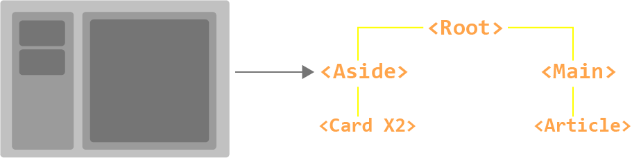
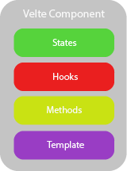
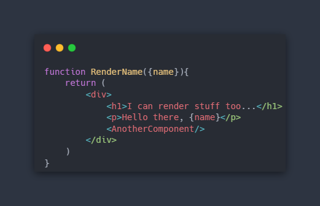
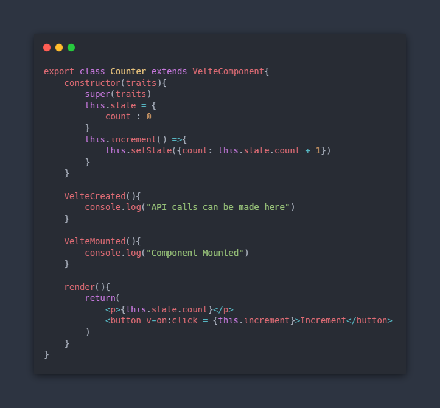

Velte components
NOTE : You should always import
VelteElementandVelteComponentfromveltewhen using velte components
Comonents allows us to split the UI into independent and reusable pieces. It's common for an app to be organised into a tree of nested components.
Velte supports function components and class components

NOTE : In velte, very component is made up of custom content and functionality.

From the diagram above, every velte component is made up of states, hooks, methods, and templates
Calling Components
Calling components is just like calling a HTML element like <img>
const App = <MyComponent/>
MyComponent is the name of the component.
Functional Components

These components are created with functions.
function functionComponent({name}){
return (
<div>
<h1>I can render stuff too...</h1>
<p>Hello there, {name}</p>
<AnotherComponent/>
</div>
)
}
const anotherFunctionComponent = ({age})=>{
return (
<div>
<h1>I can also render stuff too...</h1>
<p>Your age is {age}</p>
<functionComponent/>
</div>
)
}
Function components only accept traits and return JSX for rendering.
They can be used as root components
Class Components

These components extends VelteComponent: class, so they inherit all the functions of the base velte component from velte.
NOTE : class component names must always start with a capital letter, its still a class afterall.
Inherited Functionality
Lifecycle hooks
constructor()
The constructor() is a powerful function in velte components.
They can define states and component methods. They also add data traits functionality to class components.
//inside class component
constructor(){
//define states
this.state = {
data : 0
}
//define methods
this.increment = () =>{
this.setState({count: this.state.count + 1})
}
}
render() : Inherited
The render() method inherits from VelteComponent: class.
This method returns JSX to be rendered.
//inside class component
render(){
return(
<p>Hello velte</p>
)
}
Component states
How do we store data in a component? with states!!!
states help store data for use in a component, this can be for displaying information or using the data to perform calculations or sending requests to servers...
//inside class component constructor
this.state = {
data : value
}
Think of states like a local store for variables, where data is the name of the variable and value is the variable value.
//inside class component constructor
this.state = {
name : "Joe",
age : 23
}
NOTE :
statescan also contain objects.
//inside class component constructor
this.state = {
person : {name : "Joe", age : 23}
}
setState()
To update a state variable we use setState() method inside class components.
export class Counter extends VelteComponent{
constructor(traits){
super(traits)
this.state = {
count : 0
}
this.increment = () =>{
this.setState({count: this.state.count + 1})
}
}
render(){
return(
<p>{this.state.count}</p>
<button v-on:click = {this.increment}>Increment</button>
)
}
}
NOTE :
this.state.countaccesses the count variable inside the "state store".
NOTE :
thisis called before accessing the different methods because we usethisto reference the current component instance.
NOTE : For scalability, your components would live in another folder
componentsif using thestarter-kit. You would have to export the component by adding theexportkeyword.
Component hooks
What if I want to perform various functions during the lifecycle of my components.
You can, velte supports different hooks that run during the lifecycle of your components
Lifecycle hooks
Component methods
Methods are functions in classes, used to perform a certain grouped task without repeating code.
In velte class components methods do the exact same thing. Methods in velte live in the constructor() function
//inside class component
constructor(...){
...
//methods go here
}
NOTE : Basic velte component methods (functions) can live inside the
render()method
//inside class component
render(){
//methods go here
return()
}
Using methods inside a class component :
export class Greet extends VelteComponent{
constructor(traits){
super(traits)
this.state = {
show : true
}
//this is a method
this.display() =>{
return <p>Hello</p>
}
}
render(){
//this is a basic function
const greet = ()=>{
return <h1>Greetings</h1>
}
return(
<If condition={this.state.show}>
{()=>this.display()}
</If>
{this.greet}
)
}
}
NOTE : If we don't add
()when calling methods or functions, no need to use a callback function to call your required method or function.
Method Parameters and Arguments
When declaring a method, you can pass in parameters just like a Javascript function.
When calling the method, you can pass arguments for the required parameters just like calling a Javascript function.
export class Binding extends VelteComponent{
constructor(traits){
super(traits)
this.state = {
message : "Hey dude!"
}
this.handleChange = (event) => {
event.preventDefault()
variableValue = event.target.value
}
}
render(){
return(
<div>
<p>{this.state.message}</p>
<input name="message" value = {this.state.message} v-on:change={()=>this.handleChange()}/>
</div>
)
}
}
Component template
Velte uses JSX for templating, meaning you structure how your UI looks with JSX.
In class components, you return JSX inside the render() method. This would render the snippet of JSX in your component when called.
//inside a class component
render(){
return(
<p>Hello, from the render method</p>
)
}
Component Nesting
Components can be nested into other components by calling them. The nested components are called child components and host component that houses the nested components are called parent components
//inside child class component
render(){
return(
<div>
<p>Child Component</p>
</div>
)
}
//inside parent class component
render(){
return(
<div>
<p>Parent component</p>
<ChildComponent/>
</div>
)
}